Cylinder Head Assembly (2AZ-FE) Reassembly |
| 1. Install Intake Valve Guide Bushing |
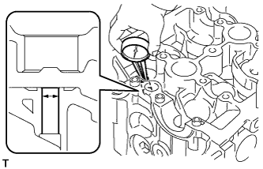 |
Using a caliper gauge, measure the bushing bore diameter of the cylinder head.
If the diameter is within specification, install an STD bushing.
If the diameter is not within specification, use a hand reamer and T-type tap holder to ream the bore to 10.335-10.356mm, and install an O/S bushing.
| Bushing Type | Outer Diameter [mm] |
|---|---|
| STD | 10.333-10.344 |
| O/S | 10.383-10.394 |
Heat the cylinder head to 80-100°C.
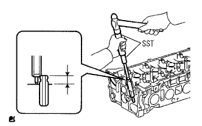 |
Using SST, tap in the bushing to the specified protrusion height.
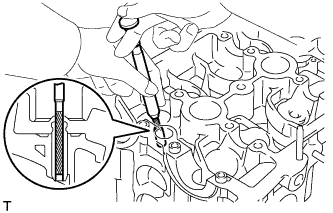 |
Using a hand reamer and a pin vise, ream the valve guide bushing to obtain the standard oil clearance.
| 2. Install Exhaust Valve Guide Bushing |
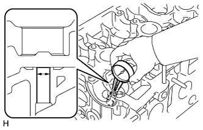 |
Using a caliper gauge, measure the bushing bore diameter of the cylinder head.
If the diameter is within specification, install an STD bushing.
If the diameter is not within specification, use a hand reamer and T-type tap holder to ream the bore to 10.335-10.356mm, and install an O/S bushing.
| Bushing Type | Outer Diameter [mm] |
|---|---|
| STD | 10.333-10.344 |
| O/S | 10.383-10.394 |
Heat the cylinder head to 80-100°C.
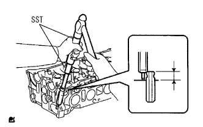 |
Using SST, tap in the bushing to the specified protrusion height.
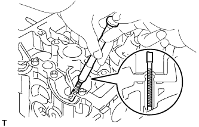 |
Using a hand reamer, ream the bushing to obtain the standard oil clearance.
| 3. Install Ring Pin (w/ Head) |
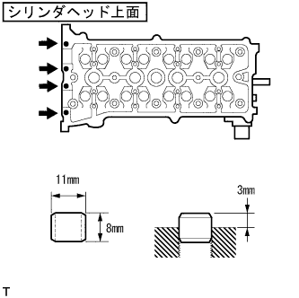 |
Using a plastic-faced hammer, tap in the ring pins to the specified protrusion height at the positions shown in the illustration.
| 4. Install Stud Bolt |
Using E5 and E7 torx socket wrenches, install the stud bolts at the positions shown in the illustration.
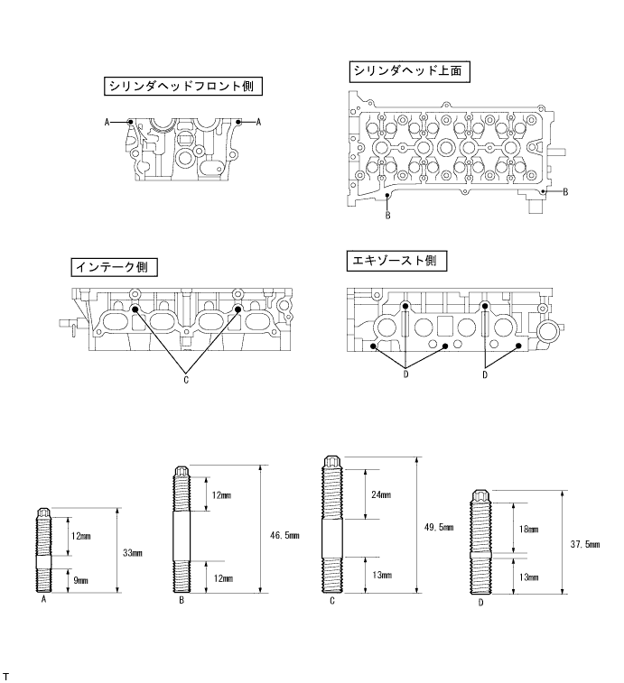
| 5. Install Plug NO.1 (w/ Head Straight Screw) |
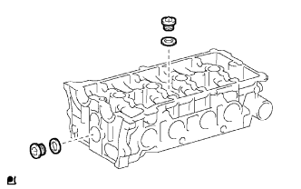 |
Using a 14 straight hexagon wrench, install the 2 straight screw plugs No.1 with 2 new screw plug gaskets.
| 6. Install Valve Spring Seat |
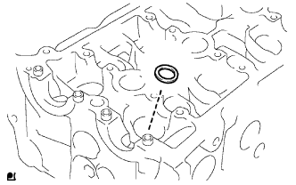 |
Install the 16 valve spring seats to the cylinder head.
| 7. Install Valve Stem Oil Seal or O-ring |
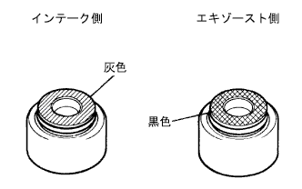 |
Apply a light coat of engine oil to the lip of a new valve stem oil seal.
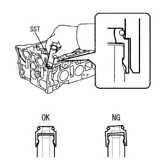 |
Using SST, push in the valve stem oil seal onto the valve guide bushing by hand as far as it will go.
| 8. Install Intake Valve |
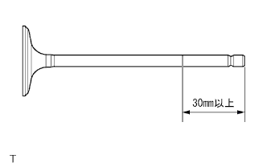 |
Apply sufficient engine oil to the locations shown in the illustration.
Set the 8 intake valves, compression springs and retainers on the cylinder head.
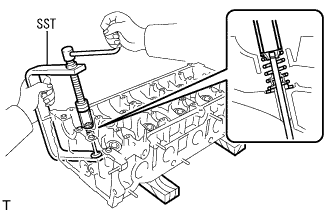 |
Using SST, install the 16 valve spring retainer locks.
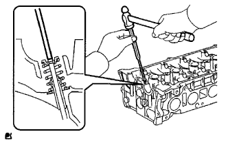 |
Using a pin punch (diameter 5mm), lightly tap the valve stem tip to settle the compression spring.
| 9. Install Exhaust Valve |
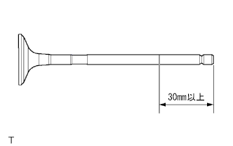 |
Apply sufficient engine oil to the locations shown in the illustration.
Set the 8 exhaust valves, compression springs and retainers on the cylinder head.
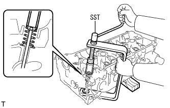 |
Using SST, install the 16 valve spring retainer locks.
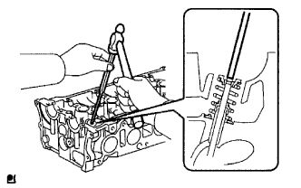 |
Using a pin punch (diameter 5mm), lightly tap the valve stem tip to settle the compression spring.
| 10. Install Valve Lifter |
Apply engine oil to the valve lifters and valve stem tips.
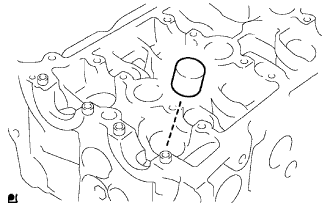 |
Install the 16 valve lifters to the cylinder head.